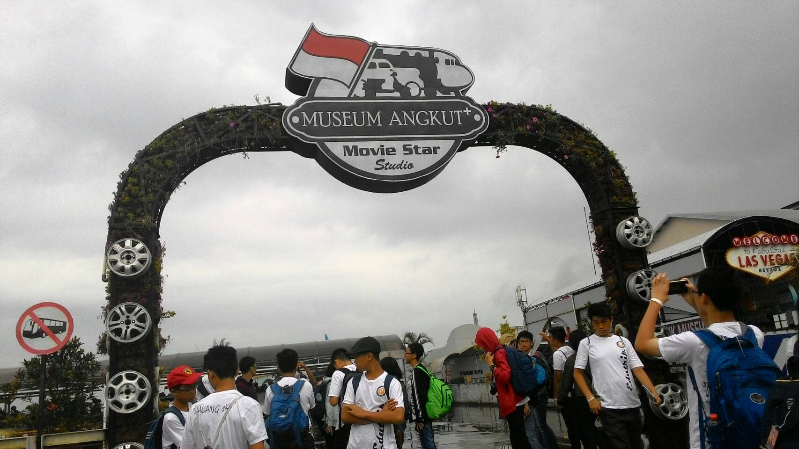

On March 22nd, 2018, the 2nd grade students of SMP Santa Laurensia toured the Museum of Angkut in Batu to conduct Educational Trip. They go to the sights by using the tour bus. At their destination they find many vehicles that have been and have been made and used by humans. There are old-fashioned transports like traditional transport, and there are some that are from more modern times. The Museum of Transport also has a wide variety of quizzes and trivia which are some of the questions that can be answered to test visitor's knowledge of manmade transports, which have been tried by some students from SMP Santa Laurensia.
For 2-3 hours students from SMP Santa Laurensia observe different transport in age and shape. During the museum, they found many interesting things such as some transport that has a wide background story. Several students of SMP Santa Laurensia also interviewed several people who visited the museum. Some interview questions and answers can be viewed in the following passage:
Interview Questionnaire:
1) What is your name and identity?
2) Where do you come from?
3) What do you think makes this place more unique than the usual location?
4) What do you think is the most memorable experience during this time?
5) Do you like this place? And what are the things about this place that can be developed and maintained,
Example: cleanliness
Answer of interview 1:
1) Solomon
2) Manado
3) Transportation Collection
4) Looking at the history of transportation from time to time, changing shape.
5) Yeah I like it, the atmosphere can be more quiet and noisy.
Answer of interview 2:
1) Pedhut Guntoro
2) Monogiri Central Java
3) There are many transport shuttles, from bikes and others from old years to the present.
4) See the collection of cars here that are ancient that can still walk at half past five in the afternoon.
5) Yes likes, which can be developed is more games using the cars that are here especially the old ones.
Answer of interview 3:
1) Ghoni
2) Semarang
3) The museum has technological and information items, preserving vehicles and is known nationally and internationally.
4) The place is spacious and comfortable
5) Yeah like, art can be maintained.
After the interview, Santa Laurensia Junior High School students fill in their respective worksheets about important information about the Museum of Transport, before returning to the bus at 17.30. The Transport museum is the last Eduactional destination before they return to Jakarta.

After a few days in Malang, on the last day of the trip in Malang, they all bought a souvenir to take home. After that they used the bus to get back to Abdul Rachman Saleh airport. There they help each other to lift all the goods and make sure everyone can get his plane tickets.
After waiting a while, to queue up. The students were given food by the teacher for lunch at the airport before boarding the plane. That's where everyone ensures everyone can eat and drink. Everyone is not thinking about themselves and caring about others, and also their presence and completeness. After that they have to wait for the time to board the plane.
After boarding the plane, all the students calmly entered the plane. On the plane all students can remain calm and orderly. They can make joint decisions to keep clean while on the plane. During the plane was also given snacks such as bread and others, also given to choose a drink for yourself.
After the plane arrived in Jakarta and landed. Each student helps each other take their belongings, and get off the plane. After getting off the plane all the students headed to the place to receive luggage / suitcase. There students help each other lift and call people to receive luggage / luggage respectively, before returning to their homes.